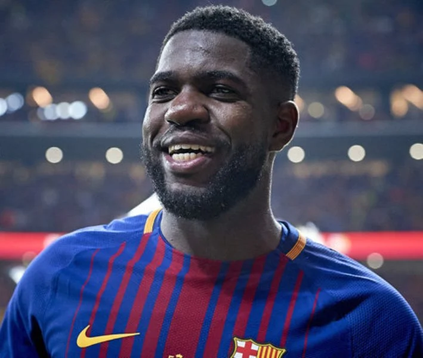

ABOUT US
Club Barcelona (Catalan pronunciation: [fubˈbɔl ˈklub bəɾsəˈlonə] (About this soundlisten)), commonly referred to as Barcelona and colloquially known as Barça ([ˈbaɾsə]), is a Spanish professional football club based in Barcelona, Catalonia, Spain. Founded in 1899 by a group of Swiss, Spanish, English, and Catalan footballers led by Joan Gamper, the club has become a symbol of Catalan culture and Catalanism, hence the motto "Més que un club" ("More than a club"). Unlike many other football clubs, the supporters own and operate Barcelona. It is the fourth-most valuable sports team in the world, worth $4.06 billion, and the world's richest football club in terms of revenue, with an annual turnover of €840,8 million.[2][3] The official Barcelona anthem is the "Cant del Barça", written by Jaume Picas and Josep Maria Espinàs.[4] Domestically, Barcelona has won a record 74 trophies: 26 La Liga, 30 Copa del Rey, 13 Supercopa de España, 3 Copa Eva Duarte, and 2 Copa de la Liga trophies, as well as being the record holder for the latter four competitions. In international club football, the club has won 20 European and worldwide titles: 5 UEFA Champions League titles, a record 4 UEFA Cup Winners' Cup, a joint record 5 UEFA Super Cup, a record 3 Inter-Cities Fairs Cup, and 3 FIFA Club World Cup.[5] Barcelona was ranked first in the International Federation of Football History & Statistics Club World Ranking for 1997, 2009, 2011, 2012, and 2015[6][7] and currently occupies the third position on the UEFA club rankings.[8] The club has a long-standing rivalry with Real Madrid, and matches between the two teams are referred to as El Clásico. Barcelona is one of the most widely supported teams in the world, and the club has one of the largest social media following in the world among sports teams.[9][10] Barcelona players have won a record number of Ballon d'Or awards (12), with recipients including Johan Cruyff, as well as a record number of FIFA World Player of the Year awards (7), with winners including Ronaldo, Romário, Ronaldinho, and Rivaldo. In 2010, three players who came through the club's youth academy (Lionel Messi, Andrés Iniesta, and Xavi) were chosen as the three best players in the world in the FIFA Ballon d'Or awards, an unprecedented feat for players from the same football school. Additionally, players representing the club have won a record number (8) of European Golden Shoe awards. Barcelona is one of three founding members of the Primera División that have never been relegated from the top division since its inception in 1929, along with Athletic Bilbao and Real Madrid. In 2009, Barcelona became the first Spanish club to win the continental treble consisting of La Liga, Copa del Rey, and the UEFA Champions League, and also became the first Spanish football club to win six out of six competitions in a single year, by also winning the Spanish Super Cup, UEFA Super Cup, and FIFA Club World Cup.[11] In 2011, the club became European champions again and won five trophies. This Barcelona team, which won 14 trophies in just 4 years under Pep Guardiola, is considered by some in the sport to be the greatest team of all time.[12][13][14] By winning their fifth Champions League trophy on 6 June 2015, Barcelona became the first European club in history to achieve the continental treble twice. The highest paid sports team in the world, in November 2018 Barcelona became the first sports team with average first-team pay in excess of £10m ($13.8m) per year.[15][16]
Our squad
Goal Keepers
1 Marc-Andre Ter Stegen
Goalkeeper
13 Neto
Goalkeeper
Defenders
2 Nelson Semedo
Defender
3 Gerard Pique
Defender
15 Clement Lenglet
Defender
18 Jordi Alba
Defender

20 Serbi Roberto
Defender

23 Samuel Umtiti
Defender

24 Junio Firpo
Defender
Mid-Fielders

4 Ivan Rakitic
Mid-Fielder

5 Sergio Busquets
Mid-Fielder
21 Frenkie de jong
Mid-Fielder
8 Arthur
Mid-Fielder
22 Arturo Vidal
Mid-Fielder
forward
9 Luis Suarez
Forward

10 Lionel Messi(C)
Forward
11 Ousmane Dembele
Forward

17 Antoine Griezmann
Forward
19 Martin Braithwaite
Forward
Coach
Quique Setien
Coach